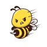

Imp:Bee sting
Diet:Regular
Act:free
Cond:good
Please
1.Iv line
2.CVS
3.Com&pom
4.Cbc,Bun, Cr, Bs,ABGorVBG, Na, K, Alt, Ast, Alk_p, u/a if needed
5.ECG
6.O2 with mask 8lit/min
7.Ser n/s 1_2lit stat
8.oint Triamcinolone N_N BD
9.Amp Epinephrine0/3_0/5mg Im q5 min if Anaphylaxis
10.Amp Hydrocortisone 100 mg iv stat if needed
11.Tab Cetirizin 10 mg tds
نکات
1: گاهی گزش سبب بروز انافیلاکسی و هیپوتنشن، آنژیوادم و شوک میشود که در اینصورت از اپی نفرین و کورتون استفاده میکنیم
2: در محل گزش ice pack میگذاریم و برای خارش آنتی هیستامین تجویز میکنیم
3: محل گزش را معاینه کنید درصورت وجود نیش داخل زخم آن را خارج کنید
4: محل را با آب و صابون بشورید
5: پروفیلاکسی کزاز فراموش نشود
6: بیماران بدون علامت یا کم علامت را تا یک ساعت تحت نظر بگیرید و با پمادموضعی وانتی هیستامین ترخیص کنید موارد بدحال نیاز به بستری دارند
تشخیص افتراقی :گزش مورچه،واکنش حساسیتی
✳️سوزش محل گزش
✳️اریتم
✳️ادم
✳️کهیر
✳️خارش
1️⃣ گزش با سایر موجودات : مورچه عنکبوت و...
2️⃣ آنافیلاکسی
3️⃣ درماتیت : آتوپیک ، تماسی و...
Cat Scratch Disease 4️⃣
5️⃣ گال
6️⃣ سلولیت
7️⃣ آبسه
8️⃣ تروما
✅سایر تشخیص افتراقی ها بر اساس علائم سیستمیک می باشدمثلا در صورت علائم تنفسی ،ACS ، آسم, COPD و ... مطرح است